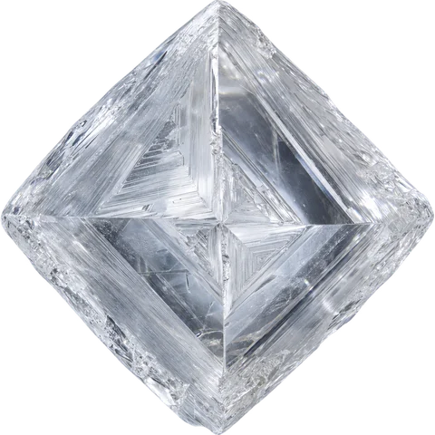
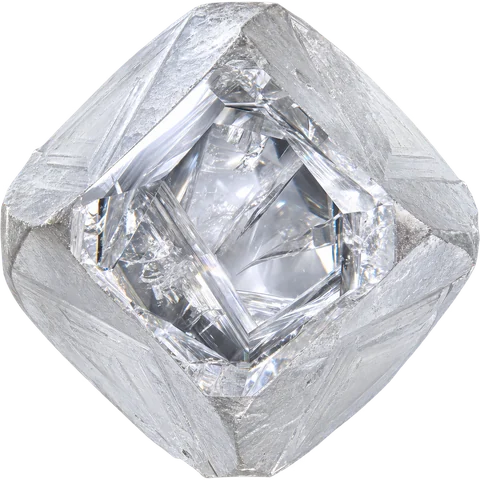
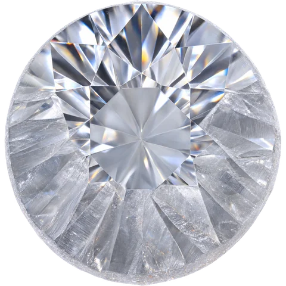
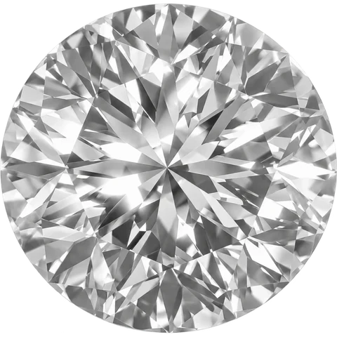
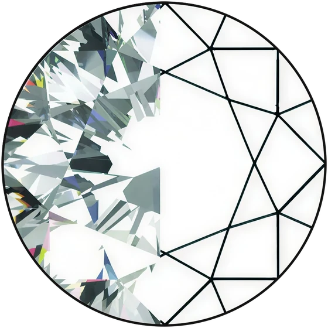
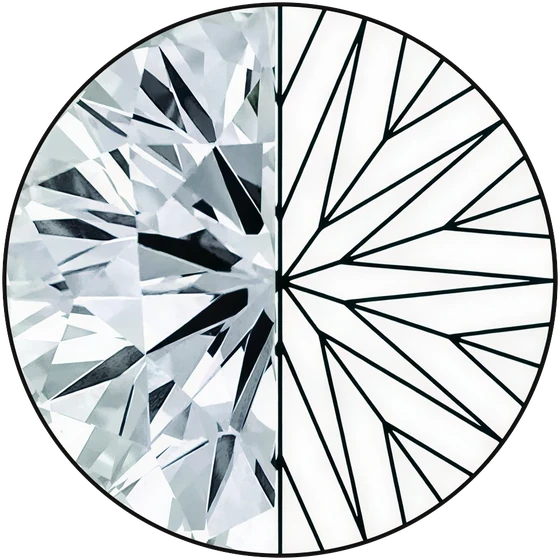

01/ 04
100 facets, precisely shaped.
Extra facets mean more light reflections, resulting in a dazzling play of fire and brilliance.




02 The diamond journey
It begins as a natural crystal, frosted and still unrevealed.
Opening the stone
A single polished window shows the light waiting within.
Precision in the making
The outline is rounded, and the first facets set the geometry to come.
100 facets of brilliance
One hundred facets, each placed to return the light.
An illustrative study of rough to polished form
03The Centurion Cut


The Centurion Diamond is designed with 100 facets, creating a distinctive play of light and sparkle.
See the difference.
04The Centurion Advantage
01/ 04
Extra facets mean more light reflections, resulting in a dazzling play of fire and brilliance.
02/ 04
The advanced cut amplifies the diamond’s glow, making it shine even in the softest light.
03/ 04
A modern take on classic beauty, crafted for those who desire exceptional sparkle and distinction.
04/ 04
It is just better brilliance — visible to the naked, untrained eye.
05A Study in Light
Where a traditional stone lets light slip through the pavilion, the Centurion geometry turns it back toward you.
100
Facets
The Centurion Diamond is designed with 100 facets, creating a distinctive play of light and sparkle.
06 Centurion Experience
Exclusivity
100
Facets per centre stone
43+
More facets than a traditional cut
Because the Centurion Diamond is patent-pending, the collection is exclusive to you. Customers cannot price-shop it against other retailers or online sellers — nothing like it exists elsewhere.
The result is a protected margin on a piece that sells itself across the counter, and a premium collection that lifts the average ticket rather than discounting it.

07At Retail
The Centurion Collection comes with a thoughtfully crafted display, distinguished by its sophisticated branded presentation.
The collection arrives as a complete statement, not a loose assortment.
07Centurion at Retail
Bring the Centurion Collection to your jewelry case.
Contact Us